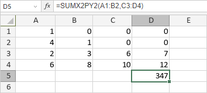

SUMX2PY2 Funkcija
SUMX2PY2 funkcija je jedna od funkcija za matematiku i trigonometriju. Koristi se za sabiranje kvadrata brojeva u odabranim nizovima i vraća zbir rezultata.
Sintaksa
SUMX2PY2(array_x, array_y)
SUMX2PY2 funkcija ima sledeće argumente:
| Argument | Opis |
|---|---|
| array_x | Prvi opseg ćelija. |
| array_y | Drugi opseg ćelija sa istim brojem kolona i redova kao array_x. |
Napomene
Kako primeniti SUMX2PY2 funkciju.
Primeri
Slika ispod prikazuje rezultat koji vraća SUMX2PY2 funkcija.
